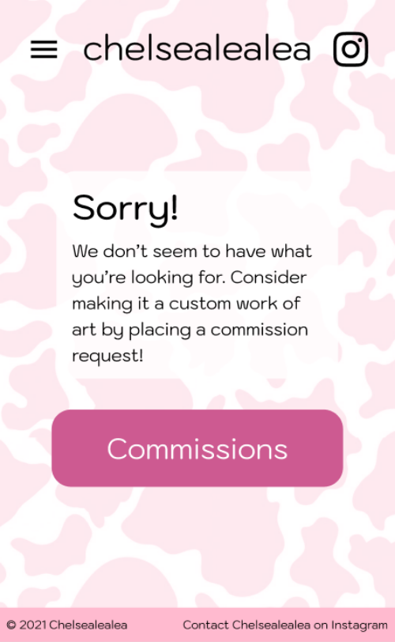
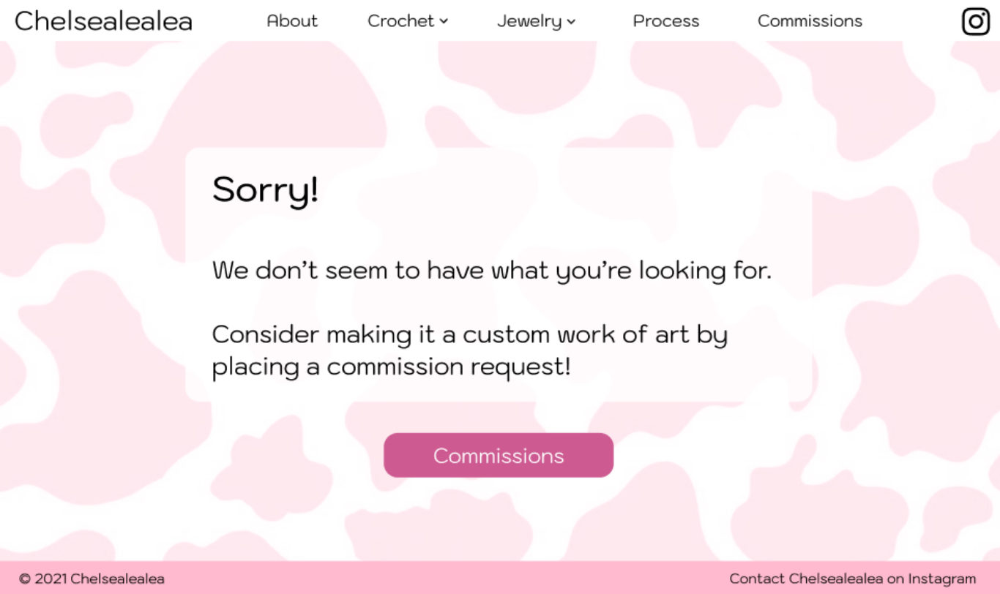
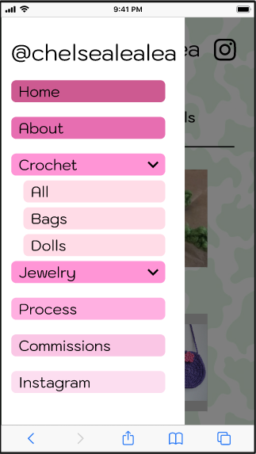
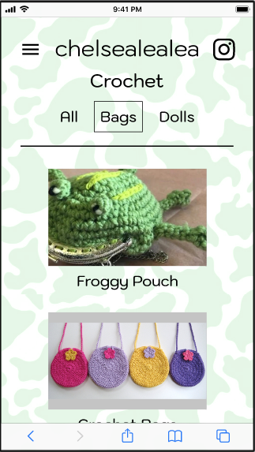
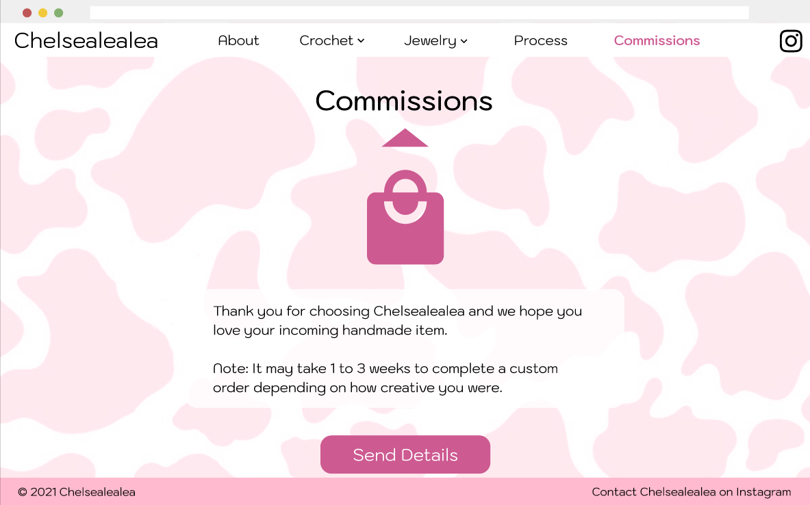

Chelsealealea is a small business selling unique handmade crochet and jewelry for middle and high school girls. Chelsea started selling the products of her hobbies during the COVID-19 quarantine, and started to expand her business by sharing what she loved on social media.
As her following grew, she needed a more permanent way of showcasing her work online.
Our objective was to create a portfolio site for Chelsealealea that did the following:
My role:
I worked in a team of four on everything from the user research to prototyping the final design, though my greatest contributions were in creating the desktop site and error pages, as well as implementing functionality in the final Figma prototype.
In order to better understand how to help build the brand, we asked nine participants, including a mix of both existing and potential customers, about their shopping habits and what they liked about Chelsealealea, as well as what concerns they might have. We distilled our findings into three personas.
The conscious shopper is someone looking to support small businesses and ethical practices
The shopper with standards is concerned with the reliability of making purchases from small businesses on Instagram
The potential customer might not be in Chelsealealea’s target audience, but who might want to make a purchase for someone else
We began our prototyping process by first determining the overall aesthetic of the site, looking at competitor sites for inspiration. Chelsea provided us with a few product images and images that she liked, which we used to create a moodboard focused on pink and pastels with a slight Y2K feel.
Once we had the aesthetic nailed down, we discussed the site map, narrowing it down to five main pages.
The process and about pages were particularly important to have, as they would be the main draw for our conscious shoppers. The commissions page would instruct users on how to actually order products from Chelsealealea, as the site itself was not meant for shopping.
We compiled our findings and plans into a creative brief, which Chelsea approved, and began working on our wireframes in Figma. This is when we began to run into design problems. Chelsea had requested that her landing page be styled similarly to the Google search homepage. However, since the site was so simple having a functional search bar would unnecessarily complicate the navigation process, and attempting to add separate navigation in the white space underneath only cluttered the page.
To solve this, we took inspiration from the visual design of search bars from other sites, and combined the navigation categories into a search bar dropdown.
We also wanted to provide ample information for customers looking to contact Chelsealealea on Instagram to make a purchase, which would mean incorporating a lot of text. However, this proved to be overwhelming to read, even when broken up into three separate pages. To combat this, we added icons to the three pages to help users understand more intuitively what each step consisted of.
In our user testing, we found that customers wanted to know prices of items they were buying. However, the nature of commission-based purchases meant prices would fluctuate and would require asking the seller directly. A few of our testers acknowledged this, but emphasized taught they would still like to be able to know where to find pricing elsewhere.
With this in mind, we focused on making sure that all products would direct the customer to the commissions page, giving them a way to find any information they still needed.
Since we had realized the importance of the commissions page, we wanted to incorporate it into our error page as well. In addition to a standard error message, we included a link to encourage users to commission Chelsealealea for whatever they didn’t find.


Our final design featured pastel cow print backgrounds that complemented the product images, a simple navigation bar that prioritized the brand over the products, and buttons creating user flows that consistently direct customers to making a purchase.



Our prototypes can be found in full on Figma:
When we presented Chelsea with the final prototypes, she loved the aesthetics of it and how well it portrayed both her crochet and jewelry work. Though she has not implemented the prototypes into a working site due to development costs, our research findings have allowed her to better understand her customer base and Chelsealealea’s strengths as a small business.
Designing for Chelsealealea certainly had its struggles, but it taught me to take inspiration from unexpected sources to create something functional yet unique. Trying out various ideas - no matter how out-there they may seem, making seemingly minor changes with each iteration, and keeping in mind the site’s end goal resulted in a portfolio for Chelsealealea that fit both her and her customers’ needs.